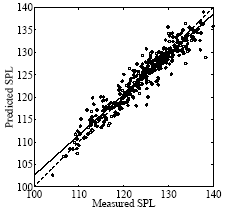
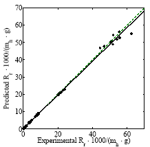

Modeling of data
Linear regression analysis for predicting self noise of airfoils
#include <iostream>
#include <fstream>
#include <sstream>
#include <string>
#include <cstring>
#include <time.h>
#include "../../source/opennn.h"
using namespace OpenNN;
int main(void)
{
srand((unsigned)time(NULL));
DataSet data_set;
data_set.load_data("../data/airfoil_self_noise/airfoil_self_noise.dat");
VariablesInformation* variables_information_pointer = data_set.get_variables_information_pointer();
variables_information_pointer->set_name(0, "frequency");
variables_information_pointer->set_units(0, "hertzs");
variables_information_pointer->set_name(1, "angle_of_attack");
variables_information_pointer->set_units(1, "degrees");
variables_information_pointer->set_name(2, "chord_length");
variables_information_pointer->set_units(2, "meters");
variables_information_pointer->set_name(3, "free_stream_velocity");
variables_information_pointer->set_units(3, "meters per second");
variables_information_pointer->set_name(4, "suction_side_displacement_thickness");
variables_information_pointer->set_units(4, "meters");
variables_information_pointer->set_name(5, "scaled_sound_pressure_level");
variables_information_pointer->set_units(5, "decibels");
const Vector< Vector<std::string> > inputs_targets_information = variables_information_pointer->arrange_inputs_targets_information();
const Vector< Vector<double> > inputs_targets_statistics = data_set.scale_inputs_targets();
InstancesInformation* instances_information_pointer = data_set.get_instances_information_pointer();
instances_information_pointer->split_random_indices();
const unsigned int inputs_number = variables_information_pointer->count_inputs_number();
const unsigned int hidden_perceptrons_number = 9;
const unsigned int outputs_number = variables_information_pointer->count_targets_number();
NeuralNetwork neural_network(inputs_number, hidden_perceptrons_number, outputs_number);
neural_network.set_inputs_outputs_information(inputs_targets_information);
neural_network.set_inputs_outputs_statistics(inputs_targets_statistics);
neural_network.set_scaling_unscaling_layers_flag(false);
PerformanceFunctional performance_functional(&neural_network, &data_set);
TrainingStrategy training_strategy(&performance_functional);
QuasiNewtonMethod* quasi_Newton_method_pointer = new QuasiNewtonMethod(&performance_functional);
quasi_Newton_method_pointer->set_minimum_performance_increase(1.0e-6);
quasi_Newton_method_pointer->set_reserve_evaluation_history(true);
training_strategy.set_main_training_algorithm_pointer(quasi_Newton_method_pointer);
TrainingStrategy::Results training_strategy_results = training_strategy.perform_training();
neural_network.set_inputs_scaling_outputs_unscaling_methods("MinimumMaximum");
neural_network.set_scaling_unscaling_layers_flag(true);
TestingAnalysis testing_analysis(&neural_network, &data_set);
FunctionRegressionTesting* function_regression_testing_pointer = testing_analysis.get_function_regression_testing_pointer();
FunctionRegressionTesting::LinearRegressionAnalysisResults linear_regression_analysis_results = function_regression_testing_pointer->perform_linear_regression_analysis();
data_set.save("../data/airfoil_self_noise/data_set.xml");
data_set.load("../data/airfoil_self_noise/data_set.xml");
neural_network.save("../data/airfoil_self_noise/neural_network.xml");
neural_network.load("../data/airfoil_self_noise/neural_network.xml");
neural_network.save_expression("../data/airfoil_self_noise/expression.txt");
performance_functional.save("../data/airfoil_self_noise/performance_functional.xml");
performance_functional.load("../data/airfoil_self_noise/performance_functional.xml");
training_strategy.save("../data/airfoil_self_noise/training_strategy.xml");
training_strategy.load("../data/airfoil_self_noise/training_strategy.xml");
training_strategy_results.save("../data/airfoil_self_noise/training_strategy_results.dat");
linear_regression_analysis_results.save("../data/airfoil_self_noise/linear_regression_analysis_results.dat");
return(0);
}

Download data set
Loading the data set
Variables information
Instances information
Neural network
Performance functional
Training strategy object
Testing analysis
Save results
Linear regression analysis for predicting residuary resistance of yachts
#include <iostream>
#include <fstream>
#include <sstream>
#include <string>
#include <cstring>
#include <time.h>
#include "../../source/opennn.h"
using namespace OpenNN;
int main(void)
{
srand((unsigned)time(NULL));
DataSet data_set;
data_set.load_data("../data/yacht_resistance_design/delft.dat");
VariablesInformation* variables_information_pointer = data_set.get_variables_information_pointer();
variables_information_pointer->set_name(0, "longitudinal_center_buoyancy");
variables_information_pointer->set_name(1, "prismatic_coecient");
variables_information_pointer->set_name(2, "length_displacement_ratio");
variables_information_pointer->set_name(3, "beam_draught_ratio");
variables_information_pointer->set_name(4, "length_beam_ratio");
variables_information_pointer->set_name(5, "froude_number");
variables_information_pointer->set_name(6, "residuary_resistance");
const Vector< Vector<std::string> > inputs_targets_information = variables_information_pointer->arrange_inputs_targets_information();
InstancesInformation* instances_information_pointer = data_set.get_instances_information_pointer();
instances_information_pointer->split_random_indices();
const Vector< Vector<double> > inputs_targets_statistics = data_set.scale_inputs_targets();
const unsigned int inputs_number = data_set.get_variables_information().count_inputs_number();
const unsigned int hidden_neurons_number = 9;
const unsigned int outputs_number = data_set.get_variables_information().count_targets_number();
NeuralNetwork neural_network(inputs_number, hidden_neurons_number, outputs_number);
neural_network.set_inputs_outputs_information(inputs_targets_information);
neural_network.set_inputs_outputs_statistics(inputs_targets_statistics);
neural_network.set_scaling_unscaling_layers_flag(false);
PerformanceFunctional performance_functional(&neural_network, &data_set);
TrainingStrategy training_strategy(&performance_functional);
TrainingStrategy::Results training_strategy_results = training_strategy.perform_training();
neural_network.set_scaling_unscaling_layers_flag(true);
TestingAnalysis testing_analysis(&neural_network, &data_set);
FunctionRegressionTesting* function_regression_testing_pointer = testing_analysis.get_function_regression_testing_pointer();
FunctionRegressionTesting::LinearRegressionAnalysisResults linear_regression_analysis_results = function_regression_testing_pointer->perform_linear_regression_analysis();
data_set.save("../data/yacht_resistance_design/neural_network.xml");
neural_network.save("../data/yacht_resistance_design/neural_network.xml");
neural_network.save_expression("../data/yacht_resistance_design/expression.txt");
training_strategy.save("../data/yacht_resistance_design/training_strategy.xml");
training_strategy_results.save("../data/yacht_resistance_design/training_strategy_results.dat");
linear_regression_analysis_results.save("../data/yacht_resistance_design/linear_regression_analysis_results.dat");
return(0);

Download data set
Loading the data set
Variables information
Instances information
Neural network
Performance functional
Training strategy object
Testing analysis
Save results